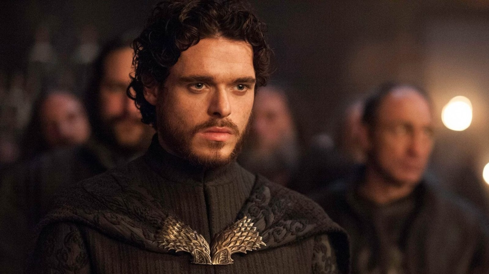

Foto's :
Richard Madden
Geboren: 18 juni 1986 (37 jaar), Elderslie, Verenigd Koninkrijk
Richard Madden is een Schotse acteur, geboren op 16 juni 1986 in Elderslie. Hij is vooral bekend als Robb Stark in de fantasyserie Game of Thrones. Madden gaat op 11-jarige leeftijd bij het plaatselijke toneel om zijn verlegenheid te overwinnen. Hij wordt in 2000 gecast in het drama Complicity, en scoort daarna zijn eerste tv-rol in de serie Boomerang. Hij is een seizoen te zien in de Canadese westernserie Kondike en spreekt een stem in in de game Castlevania: Lords of Shadow. In 2015 speelt hij een hoofdrol als Prince Charming in de sprookjesfilm Cinderella.
Filmcarrière:Richard Madden verwierf internationale bekendheid door zijn rol als Robb Stark in de populaire HBO-serie "Game of Thrones". Zijn overtuigende vertolking van de rechtvaardige en vastberaden koning in het Noorden maakte hem een geliefde figuur onder fans van de show. Naast zijn succes in "Game of Thrones" heeft Madden indruk gemaakt met zijn acteerwerk in verschillende andere projecten. Hij heeft zich bewezen als een veelzijdige acteur met de mogelijkheid om uiteenlopende rollen te vertolken. Zo speelde hij bijvoorbeeld in films als "Cinderella" (2015) en "Rocketman" (2019), waarin hij respectievelijk de Prins en Elton John zelf vertolkte. Madden's acteerstijl wordt vaak geprezen vanwege zijn diepgang, emotionele resonantie en authentieke aanwezigheid op het scherm. Zijn vermogen om complexe personages tot leven te brengen, maakt hem een gewilde keuze voor regisseurs en een favoriet bij critici. Naarmate zijn carrière zich verder ontwikkelt, is het duidelijk dat Richard Madden een acteur is die blijft groeien en evolueren in zijn vak. Met zijn indrukwekkende portfolio en bekwame acteertalenten heeft hij zich gevestigd als een van de meest veelbelovende en bewonderde acteurs van zijn generatie. Het is dan ook niet verrassend dat hij een sterke en invloedrijke aanwezigheid blijft behouden in de entertainmentindustrie.